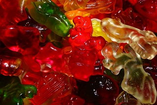
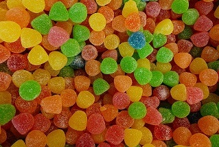

Unsere Produkte
Fruchtgummis
Hier gibt's die echten Fruchtgummi-Gummibärchen
Eine echte Traditions-Leckerei, die inzwischen Generationen überspannt: Hergestellt aus reinem Fruchtgummi, sind Gummibärchen seit 1922 ein echter Kinderfavorit. Jedermann und -frau kennt die bunten Haribo-Bärchen, die sich in all den Jahrzehnten kaum verändert haben. Bestimmt haben auch Sie Ihre Lieblingsfarbe, die Sie aus einer Schüssel als Erstes herauspicken.
Natürlich beschränken wir uns nicht allein auf Gummibärchen:
Wie wäre es mit sauren Drachen von Astra oder fruchtigen Pfirsichringen von Fini Cup? Lassen Sie sich von der Vielfalt der Fruchtgummis inspirieren – so, wie es zahllose verschiedene Menschen und Geschmäcker auf unserem Planeten gibt, existiert auch das dazugehörige gewaltige Sortiment an Süssigkeiten, um jeden einzelnen befriedigen zu können. McSchleck.ch hat sie alle, ob Fruchtgummi, Gummibärchen oder Mäusespeck!
 Kaugummi
Beissen Sie die Zähne zusammen! Kaugummi muss nicht teuer sein – bei Candy Shop 1998 kaufen Sie das Chewing Gum Ihres Geschmacks zum konkurrenzlos niedrigen Preis! Bestellen Sie nach Lust und Laune, und schon können Sie draufloskauen.
Getränke
Süssigkeiten machen durstig, so viel steht fest! Doch keine Sorge: Bei Candy Shop 1998 können Sie zusätzlich zu Fruchtgummis, Gummibärchen und Zältli Getränke bestellen. Unser reichhaltiges Angebot überzeugt auch in dieser Hinsicht.
Vitamine in geschmackvoller FormLieben Sie es frisch und fruchtig, haben wir Obstsäfte aller Geschmacksrichtungen für Sie im Angebot, von Capri Sonne bis hin zu Berry Company. Ziehen Sie Sprudelgetränke vor, stöbern Sie zwischen unseren Twist-and-Drink-Artikeln mit Cola-, Apfel, Waldbeer- oder Himbeergeschmack. Auch Eistee, Energy Drinks sowie Tafelwasser – mit und ohne Kohlensäure – können Sie bei uns bestellen!
Der menschliche Körper besteht zum grössten Teil aus Wasser. Von ärztlicher Seite wird eine tägliche Flüssigkeitsaufnahme von mehreren Litern empfohlen, immer abhängig vom Wetter und der körperlichen Betätigung. Treibt ein Mensch beispielsweise Sport und schwitzt infolgedessen stark, sollte er auch mehr trinken, um einen entsprechenden Ausgleich herbeizuführen – am besten schon vorher.
Jelly-Belly
Alle Kinder lieben die Jelly Belly Beans Gelee Bonbons. Kennen sie die feinen Jelly Belly aus Amerika. Greifen sie zu, sie sind megafein. Es gibt bis zu 40 verschiedene Geschmacksrichtungen. Süssigkeiten aus den Staaten sind immer der Hammer.